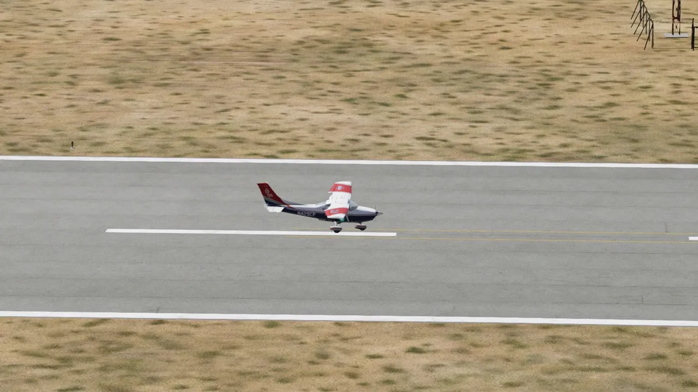

THE AI MISSION PILOT
When no pilot can sit at the console, the airplane still flies.
An observer wants to practice the DF on a weeknight. A base wants to run the whole exercise with every aircraft airborne. The AI Mission Pilot flies the search pattern, hands the airplane to the autopilot for the cruise, and takes it back for the approach, so the rest of the crew can train.
The search pattern
HOW IT WORKS, IN PLAIN TERMS
Three layers, kept deliberately apart.
- Judgment. Tasks are chosen and results read above the control loop — "fly the ESCON square at 4,500", "that landing was long of the aim point" — today by the test team and its AI coding assistants working offline, by design never by a model inside the loop. The flights on this page were started by scripts that name the task; a language model is not in the airplane.
- Stick and rudder. A small, predictable controller does the flying: same inputs, same outputs, every time. It talks to the simulator through a bounded bridge, frame by frame fifty times a second, on a control lease that expires in under a fifth of a second, and the simulator pauses the moment the controller goes quiet. An independent observer scores every trial from the recorded trace, not from the controller's own opinion.
- Workload and safety. The Garmin GFC 700 flies the cruise and climb legs the way a human crew would use it, with a hand-over in both directions (flown in vertical-speed mode; the flight level change (FLC) procedure crews brief is not yet validated) and a terrain guard that climbs away from the Ramona ridge before the airplane gets there.
TAUGHT BY A FLIGHT INSTRUCTOR
Corrected the way a flight instructor corrects a student.
The controller was corrected the way a certificated flight instructor (CFI) corrects a student, by one sitting at the simulator and watching it fly. Pitch controls airspeed, power controls the glidepath; if you are low and slow, lower the nose and add power. Make the flare gradual and keep raising the nose in the last two seconds. In a crosswind, aileron into the wind and rudder to keep the nose straight, through touchdown and into the rollout. And look at the usable runway: the instructor caught a scorer that called a landing good when the wheels touched before the displaced threshold, and the acceptance test changed.
OPERATIONAL CONCEPTS
Hands for the parts that need hands.
The AI is written to hand-fly the parts that need hands: taxi and line-up, the takeoff roll and initial climb, pattern entry, the search pattern itself, and the approach and landing. Of these, the search pattern, the autopilot hand-over and the approach and landing have been flown and scored (table below). The GFC 700 takes the rest. Every aircraft is a data profile, not a code branch: the C172SP and the C182T fly the same program with their own speeds and flap gates, and the C182T carries a measured performance table flown with the aircraft's own autopilot.
Flown, on the simulator

Touchdown at Montgomery-Gibbs (KMYF). The AI pilot's landing, seen from the side: wheels on about 63 m past the aim point, then rollout.
Handing over. The AI engages the GFC 700 and the terrain guard climbs away from the ridge.
REPEATABLE, FLOWN, AND STILL BEING TESTED
What is repeatable, what has been flown, and what is still owed.
How to read the table. Repeatable: flown and independently scored more than once. Flown: done at least once and scored. Not yet: owed. Nothing here is a validated tuning; both aircraft profiles still carry tuning_validated = false, and the last row says so.
| Capability | Status |
|---|---|
| Cessna 172SP: repeated flight cycles, independent scoring, terminal pause every time | Repeatableten-and-ten campaign; tuning not yet validated |
| 172SP crosswind landings at Montgomery, 12–15 kt | Flownscored; the formal 10/10 gate was not completed |
| 172SP full sortie Gillespie → Mission Bay departure → vectors → Montgomery ILS 28R | Flownattended |
| ESCON expanding square, 9 waypoints, altitude within 25 ft | Repeatableon both aircraft |
| AI → GFC 700 → AI hand-over with the terrain guard at the Ramona ridge | FlownPASS on both aircraft in vertical-speed mode; the FLC hand-over crews brief is not yet validated, and the guard's turn-back has not been flown |
| Cessna 182T takeoff and landing | Flownthe landing passed its scorer but touched down 63 m past the aim point, still long |
| Tuning validated end to end | Not yetfor either aircraft: a full scored validation sortie is still owed |
| A real airplane | Nevernot the goal |
THE F-4 AND THE CARRIER
Arrestments from a Case I-style arrival, on the simulator.
Alongside the Cessna work, the same ideas were pointed at something harder. A separate F-4 test program, built on the same principles — bounded, leased control; every flight's telemetry recorded and scored afterwards by an independent check — flies the Laminar F-4 Phantom II in X-Plane 12.4.3 through a Case I-style overhead arrival: the initial, the break, the downwind descent, the approach turn, the groove, and a guarded terminal to the deck. The project calls the arrival card experimental; the pattern's timing does not yet match the briefed procedure (rollout about 190 knots against roughly 250 briefed, a 52–54 second approach turn against 45).
In the program's own test flying, after some fifty development attempts, the last three versions of the control law came aboard on 12 of 15 completed approaches — flown on a development copy of the aircraft whose tail hook was extended to 50° (stock is 40°). On the unmodified aircraft, in one series of five on 2026-10-14, the figure was 3 in 5; the stock hook appears to need the wheels down further aft, and the aim point has not yet been re-tuned for it. "Completed" excludes attempts the plugin's own oscillation guard waved off within seconds of engaging; counting those, it is 12 in 22 and 3 in 6. Earlier versions did much worse (for example 5 in 10 and 1 in 5 on the two versions before these).
It is not a CAP mission. It is evidence that the ideas carry to a harder airplane, and no more than that.
| Separate program | Status |
|---|---|
| F-4 Phantom II (Laminar model), Case I-style overhead arrival to an inferred arrestment | Flownscored from recorded telemetry: 3 arrestments in 5 completed approaches on the unmodified aircraft (one series); 12 in 15 on a development copy with the hook extended 10° further than stock; simulator characterization only; not a CAP-VSAR capability |
The groove. The F-4 test program's jet in the groove. Simulator characterization, not a qualification; see the paragraphs above and the notes below.